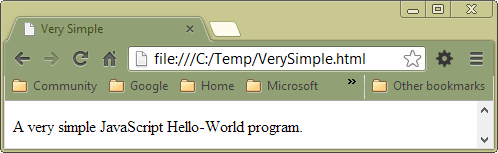

GettingStarted
Welcomes to GettingStarted
- Chapter 01 - Introduction
- General Considerations
- Philosophy
- Creativity
- Performance
- Bad Smells
- Arrogance
- Testing
- Refactoring
- Design
- Guidelines
- Order and Discipline
- Be Practical
- Part II
- Introduction to JavaScript
- Hello World at the Command Prompt
- Hello World in the Browser
- Separating HTML and JavaScript
- Best Practices
- The Case of File Names
- Client Side, Server Side
- Console.Log
- Learn More
- The Right Tools
- The Right Books
- Some Caveats
- Some Links
- News Links
- Blog Links
- Microsoft
Chapter 01 - Introduction
This chapter covers general development strategies. The focus is on JavaScript and related tools but much of what is said applies to any computer language. The primary goal is help intermediate developers develop the skills necessary to begin the transition to expect developer. Nevertheless, beginners will find some useful material in the early chapters. More experienced developers who are new to JavaScript can learn some of the basics and danger points in the language. After reading this chapter, you can move on to the more practical, hands-on chapter called JavaScript Basics.
General Considerations
This book is designed to teach intermediate level developers how to write testable, maintainable, robust, well-structured code.
Most developers who complete beginning level courses can:
- declare variables
- write loops
- branch on logical statements or operators
- compose functions and pass values to them and from them.
These fundamental tasks are essential, and must be mastered before serious study of programming can commence. In the chapter called JavaScript basics I do show how these tasks are performed using the JavaScript language, but that is not the focus of this text.
The best programmers take pride in their code. They want to write code that works, of course, but they also want to write code that is easy to understand and easy to maintain. In particular, they want to create code that is:
- Testable
- Maintainable
- Reusable
- Robust
- Fast enough
Order here is important. Nearly every method or function we write should be, before everything else, testable. Once we can test it, then we can refactor it so as to make it more maintainable, reusable and robust. We also refactor our code to make it more readable. In most cases our code only needs to be fast enough not to annoy the user; there is rarely a need to make a fetish out of performance issues.
Good code:
- Has carefully chosen identifiers
- Is well formatted
- Divided into short, testable functions that serve a single purpose
- Organized in well designed modules that perform a single task
- Designed in accordance with basic programming guidelines such as:
- Loose coupling
- The Single Responsibility Principle
- The Open Closed Principle
Philosophy
This text is designed to be readily comprehensible. Too many books are clever rather than clear. Any developer should be able to read this text and understand what it teaches about the art of development.
This book is aimed at a particular niche:
- Helping intermediate level programmers learn to create programs that work
- Helping intermediate developers be prepared to learn how to become, or how to work with, expert developers
This book is designed to take an ordinary developer and teach them the perspective of a master developer. I want to show developers that there is more to programming that simply writing loops, branch statements, and calling functions. Too many developers are stuck at the intermediate level because they don't have the knowledge needed to understand expert books, strategies and algorithms. Once they understand the difference between learning the basics, and mastering proper application design, then they will be able to move forward in their careers. Even if they never become experts themselves, they will be skilled enough to work on advanced teams that develop interesting and important projects.
Creativity
Many developers with a strong creative bent lack the analytic skills necessary to help them write good code and bring their ideas to fruition. One of my goals is to help people like this succeed. If you have a creative bent, but are having trouble bringing your ideas to fruition in code, then you will find this text is designed to help you succeed.
Your discipline, creativity, business smarts, or ideas will never be worth anything if you can't bring your idea to fruition. My goal is to teach a manner of programming that people of "average" talent can use to help them accomplish their goals.
Performance
“Programmers waste enormous amounts of time thinking about, or worrying about, the speed of noncritical parts of their programs, and these attempts at efficiency actually have a strong negative impact when debugging and maintenance are considered.” — Donald Knuth in "Structured Programming with Go To Statements"
We should not concern ourselves with performance issues unless we hit a specific problem with execution time. Even then, we should probably not worry about the problem until the latter stages of program development.
Developer time and project schedule are often more important than minor optimizations in noncritical code. Most users will not notice whether or not one infrequently called method is 5 nanoseconds slower than it could be after four or five hours of optimization. But everyone notices if a project is behind schedule. So don't focus on performance until the latter stages of development. Focus instead on writing clean, easy to maintain code. It will be much easier to optimize clean code than spaghetti code.
If, near the end of a project, you find you do have a performance problem, don't ever try to guess where it is, even if it seems obvious. Instead, use a profiler to measure performance and find the slow spots. Then review your architecture and see if there are ways to speed things up.
I've taught hundreds of students, and I have found that it is very rare for them to write code that is too slow. It is, however, common for them to write code that is buggy and overly complex. However, I have seen a number of student projects awash on the rocks because they tried to optimize a routine that probably never would have a significant impact on program performance. It is also common to see developers craft messy, hard to read code by adding optimizations that the compiler will do for you automatically. Or conversely, some attempts to optimize code prevent the compiler from performing much better optimizations.
Suppose a method that is called once runs in 100 milliseconds. Spending hours to get it run in 80 milliseconds is probably a waste of time. If you end up creating messy, hard to read, or repetitious code in the process, then you probably did more harm than good.
In general, however, it is not performance that causes intermediate level programmers to fail. Students fail to complete projects or quash bugs because they fail to properly craft their code.
It simply does not matter how fast your code is if it doesn't work and can't be tested. The first goal is to write clean, easy to maintain code that can form the building blocks for our tests and for a working program.
NOTE: I recognize that some projects, such as the core modules of an OS or compiler code generation, are very much concerned with even small performance issues. My argument here is not that there are no cases where performance is important, but only that it is generally not a high priority for typical programming assignments.
Bad Smells
Throughout this text I will try to highlight the kinds of errors in judgment that signal serious, deep rooted problems in a code base. If you look at a few samples of code from a big project, and see certain mistakes repeated over and over, then it is often fair to assume that the whole project is rife with problems. Developers often call these bad smells. We will talk about them in depth later on, but common problems include:
- Repetitious code
- Large objects that take on too many tasks
- Large methods that do too much and have lots of private variables
- Multiple occurrences of the same switch statement
- Long parameter lists
- String constants, and especially the same string constant, scattered throughout a method, object or program.
- Dead code or commented out code
- Tight coupling. One class knows too much about another class
Arrogance
Arrogance stalks through the ranks of modern programmers like the plague spreading through the streets of of medieval town. Arrogance is more than simply a boorish and unattractive trait, it causes real damage. It hampers careers and in some cases destroys lives.
There is nothing more pathetic than a poor developer who loses a job because they are too arrogant to accept even simple tips on how to write better code. It's one thing to lose a job due to lack of skill, and another to lose it because you reject the principles of good application development out of sheer arrogance. The developer who is too "intelligent" to learn is a developer who will likely have a very short, or highly underpaid, career.
Here are some of the things that I hear from arrogant developers who simply don't have the sense to see how much they still need to learn:
- My code doesn't need to be tested. It just works.
- I don't need to modularize or structure my code.
- Properly formatting my code is a waste of time.
- I have my own system for formatting code, the team guidelines don't apply to me.
- I hate callbacks/recursion/rest calls/functional programming/tuples/promises etc because they are stupid
- Other people can't understand my code not because its a mess, but because they are dumb.
- Language X is stupid, my favorite language is brilliant.
- My platform, my OS, my version of my OS, is the only great development environment, everything else is junk.
- I don't need Git, I've backed up all my code on a thumb drive.
- One letter identifiers make my code shorter and easier to read.
- I don't need to refactor my code.
In short, if you think everything that is unfamiliar or hard to understand is stupid, then you probably need to examine your assumptions. If you refuse to take the time to make your code fit in with your teammates code, then you are headed for trouble.
Having said this, it is not necessarily fatal for a talented developer to be narrow minded in some particular area. A classic example of such a person would be Eric Raymond, who is guilty of the OS chauvinism listed above. Of course, Eric Raymond is so talented, so hard working, and so knowledgeable that he can afford to burden himself with a few glaring flaws. The odds that you are equally talented are vanishingly small. In Raymond's case, one could even argue that he turned his weakness into a strength. His over the top support of Unix lit the fire in his belly that helped him produce some very important books.
But some developers are narrow minded not just in a few cases, but in multiple ways. In programming, as in many areas of life, it is the people who mistakenly think they know a lot who are most dangerous. In most, but not all, cases, good developers are humble developers. Arrogance is usually a sign of ignorance. Most arrogant people lack the self-knowledge necessary to see their own flaws.
An average developer who thinks they are great is a liability. An average developer who is open minded, teachable, and hard working is usually a strong asset.
Testing
There are no hard and fast definitions for the kinds of tests that people write. However, I generally break tests out in two types:
- Tests run from the developer's perspective
- Tests run from the user's perspective
Of course, it is usually the developer who runs all these tests. The difference between them is in what is being tested. Developer tests are testing code, while user tests are testing features. The person who hires you to do your work probably won't understand most developer tests, but they will understand a test that shows that a particular feature works. In fact, end users can often define what user tests need to be written, but they would not know how to define a developer test.
Developer tests are usually either:
- Unit tests that test a single object and use mocks for dependencies
- Integration tests that test the interaction between two or more objects
User tests are typically either:
- Functional tests that prove that a feature works correctly
- Acceptance tests that check if the program as a whole works correctly and within reasonable performance limits
It is common for acceptance tests to be used as a means of proving that a program meets the specifications set forth by the person who hired out the work. "Here are tests that prove that our program does what you asked us to do."
Again, there is some disagreement between developers as to exactly how to define the various tests outlined above. For instance, I find it hard to draw a solid line between functional testing and acceptance testing in certain cases.
We will study all of the tests outlined above, but the primary focus will be on developer tests.
Refactoring
Refactoring is the art of improving code without adding new features or fixing bugs. Typically we refactor our code to make it more:
- reusable
- readable (comprehensible)
- maintainable
If we can create code that is testable, then it should be possible to refactor it so that it is maintainable, reusable and robust. The art of writing robust code is the art of learning how to test our code, how to refactor our code, how to make it reusable.
Testable code should be, by definition, reusable. It is used once in your program, and once in your tests. Thus it is reusable. If it is not easily reusable in both your tests and your program, then it needs to be refactored.
We need to know what impact a bug fix will have on the rest of our program. That is one of the reasons we test our code. After we make a bug fix, we run our tests to see what impact the change had on our code.
The art of writing code that is easy to test and easy to maintain turns out to be one of the most complex and important tasks a developer must master. Except in very rare cases, it can only be achieved through repeated refactoring. Just because your code works, or appears to work, that does not mean it is finished. As mentioned early, good code should be:
- Testable
- Maintainable
- Reusable
- Robust
- Fast enough
We achieve these goals by refactoring our code.
Design
How do we learn to write maintainable, well designed code? Two key factors that help us achieve our goal are:
- Adopting good programming principles
- A deep understanding of our tools and our language.
By programming principles I'm talking about things like:
- Agile Design
- Programming guidelines such as the single responsibility principle
- Team dynamics
- Test Driven Development (TDD)
- Behavior Driven Development (BDD)
But knowing the theory is not enough. You also need a deep, intuitive, understanding of JavaScript or any other language you use. This is crucial if you want to write good code. You will constantly be forced to make implementation decisions when you write code. You will not be able to make any of those decisions unless you first have an understanding of what features are available in the language, and when and how to use them.
The bottom line is that you need to have a two pronged approach to development. On the one hand you need to understand good development principles, and on the other hand you need to dig into the details of your chosen language. Good developers can move fairly easily between computer languages, but their should be one or two languages that they choose to study in depth, and on which they focus most of their energy.
Guidelines
So what are the programming principles mentioned in the previous section? Well, it turns out that their are many patterns and theories of development that you can study. However, in this book we will spend most of our time focused on just a few key princples:
- Test Driven Development (TDD)
- Loose Coupling
- The Single Responsibility Principle
- The Open Closed Principle
A well designed architecture supports the Open Closed Principle:
- Modules, Classes and Functions should be open to extension but closed to modification.
Along with loose coupling the single-responsibility principle and TDD are core guidelines for our work. The open closed principle is one of the foundations of good software design. My classes are not really about Linux, git, Angular, jQuery, or express. They are about how to build applications using our core ideas:
Another important design principle not emphasized in this class is the Dependency Inversion Principle.
Slide decks that might be useful:
- Agile Overview: http://bit.ly/1qf6V4t
- Refactoring: http://bit.ly/elfrefactor
We will also spend a small amount of time studying:
As a general rule, these are the rules, ideas and guiding principles that make possible agile development:
Order and Discipline
If you don't need to be a genius in order to write good code, then what traits do you need? The short answer is that you need to be very well organized. If your tests, objects, modules, scripts and documents are well organized you don't need to be a genius to use them effectively.
It is not easy to get organized. In fact, it takes some special traits. Perhaps a list of such traits might look something like this:
- An orderly and logical mind
- An obsessive concern for detail
- A degree of patience that others consider a bit freakish
- The ability to go inward, to work alone, in silence, for hours, combined with the ability to work with others on a team
Good developers adopt or create systems for organizing their code, their tools, and their documents. Without this ability, developers tend to waste vast amounts of time, or fail altogether. The problem is that most developers don't see how important it is to work on developing good strategies for organizing code, scripts and documents. They always want to "get on with it." The think, for instance, that adding a new feature is more important than writing a test or ensuring that an object is reusable.
Much of this book is about learning what organizational techniques are best. Whether the subject is writing tests, writing methods, writing objects, writing scripts, or storing files, we will always be looking for the best techniques and most effective way to organize our work. The theory is that these organizational skills can help us succeed.
However, even if you picked a terrible technique for organizing your code, and stuck with it, you might have a chance of succeeding. Even poor organization is much better than no organization. However, most good developers have a tendency to develop relatively efficient ways to organize their code and tools.
Be Practical
Because we live in a consumer society, many Americans have a tendency to accumulate a lot of junk that is not really needed. This is fine until it comes time to clean up the house. It can be very difficult to create an orderly, neat home if it is filled with an endless array of consumer products.
So the day comes when we have to start throwing away, giving away, or selling the things that clutter our house. For most people, this is a difficult process. It takes very little creativity to find justifications for keeping even broken things that we haven't used in years. But eventually, the light must dawn, and we start to winnow. The best winnowers learn that having a few things that work, and that can be found, is much better than having hundreds of things, only some of which work, and most of which can't be found without a long search.
I'm sure you see the analogy I'm setting up. I'm sure you can also come up with counter arguments. There are some programs that do just about everything and do it well. My suggestion, however, is that you adopt the clean house analogy to your programs: It is much better to write a small, simple program than a large complex program. If you really need additional features, consider creating a new program, or at least a completely pluggable module, that encapsulates the new functionality.
Almost all computer languages provide simple mechanisms for calling one program from another program. Most operating, systems, and especially Unix based systems, are designed to allow multiple programs to work in concert. The practical thing to do is create only small, simple programs that do only a few things.
Many times I have started writing a program, only to find myself bogged down in details that threatened to overwhelm me. To fight the chaos I began to strip layers of complexity. At times that meant I had to limit the features in my program, but frequently these features were not nearly as important as they were costly, or they could find a home in a second program. In the end, I ended up with a shorter, simpler program than the one I initially meant to write. But my program worked and my users liked it.
I was much better off with a robust program that worked, than with a flaky program that was cool but not reliable. And when users looked at my code, they rarely complained. It was simple but robust. It is hard to criticize code that works!
A lot of good developers have missed their chance to create a useful or important program because they have added too many features or focused too much on writing "clever" code that is fast and small, but which is also hard to debug, maintain and understand. Instead of focusing on speed and size, focus on the following concepts, and others that will be developed throughout this text.
Write code that:
- Is easy to read and maintain
- Contains only absolutely necessary features
- Sacrifices features that will be used by only a small percentage of users
- is aligned with best practices, especially those outlined by the Agile school of development
Part II
Enough theory. Let's start writing code.
Introduction to JavaScript
Large parts of the web are driven by three related technologies: HTML, CSS and JavaScript. The differences between these technologies can blur at times, but the following assertions may help you understand the primary purpose of each component:
- HTML files contain content such as text, bitmaps or videos
- CSS let's you define how the content should appear
- JavaScript allows you to perform actions that animate that content
It is possible to completely scramble these rolls. You can put content in JavaScript files and use HTML to define the appearance of your content. It is not, however, good practice to do these things. I prefer to take a relatively hard line, and to insist that:
- Content, and content alone be placed in HTML files,
- That appearance (font, bold, spacing, margins, etc) be specified only in CSS files
- And that JavaScript be used only to perform actions.
You will, on occasionl see me break the third rule, but the first two I adhere to except in cases where I want to prove a point, or illustrate a concept, rather than show how to write good code.
Hello World at the Command Prompt
If you want to learn JavaScript, it can be helpful to start with a command line utility. To get started, install NodeJs, and run scripts from the command prompt:
Other options include:
- Java: rhino
- Windows: cscript and perhaps there is some kind of chakra command line tool.
- Mac: JavaScriptCore
Frankly, I know little of these alternative JavaScript or JavaScript-like engine. Nevertheless, I suggest that you stick with NodeJs unless you have specific reason to do otherwise. Obviously I'm in no position to discuss their relative merits, but I am confident that NodeJs is both a very popular and well regarded solution. For instance, if you are interested in participating in the job market, circa 2016, NodeJs would be the obvious choice for server side or command line based JavaScript.
After installing node, create a simple source file like this one:
function gettingStarted(count) {
for (var i = 0; i < count; i++) {
console.log("I'm getting started");
}
}
gettingStarted(5);
Save the file as getting-started.js. To run the program, type the following at the command prompt:
node getting-started.js
for instance
$ node getting-started.js
I'm getting started
I'm getting started
I'm getting started
I'm getting started
I'm getting started
That's all you need to node to start creating simple command line script that help you learn JavaScript. We will write many such programs, and expand considerably on these basics. I suggest you create such programs whenever you have feel the need to experiment with basic JavaScript syntax. Meanwhile, I'm going to switch the focus to the browser, as that is still the primary platform for the JavaScript language. I just wanted to show you how to create simple JavaScript command line scripts because they are so useful when you are learning the language.
Hello World in the Browser
JavaScript is, of course, most frequently seen running along with HTML and CSS in a browser.
In Listing 01 you can see a very simple "Hello World" HTML file that uses JavaScript. You can save this file as very-simple.html.
I stated earlier, that I do not like the practice of embedding JavaScript directly in an HTML file. Nevertheless, I'm going to show you how it is done, if for no other purpose than to make clear exactly what I don't think you should do.
Listing 01: Hello world in JavaScript.
<!DOCTYPE html>
<html>
<head>
<meta charset="utf-8">
<title>Very Simple</title>
<meta name="description" content="JavaScript intro">
<meta name="viewport" content="width=device-width, initial-scale=1">
</head>
<body>
<p id="simple"></p>
<script type="text/javascript">
document.getElementById("simple").innerHTML = "A very simple JavaScript Hello-World program.";
</script>
</body>
</html>
Just to be clear, the offending lines are the following:
<script type="text/javascript">
document.getElementById("simple").innerHTML = "A very simple JavaScript Hello-World program.";
</script>
The call to getElementById and the reference to the innerHTML property are clear invocations of the JavaScript engine and thus should not be found in an HTML file. It may be a common practice, and there may even be occasions when this kind of syntax makes sense, but nevertheless, I'm going to be quite dogmatic here and say that one should not embed JavaScript in an HTML file. Even if you see a great and highly respected writer or developer doing such a thing, you should simply cluck your tongue, shake your head, and murmur, perhaps not quite loud enough for anyone to hear: "The shame. Oh, the shame." If you have trouble with this rule, consider it this way: You have, I'm sure, been taught never to use goto statements. There are, in fact, occasions when it makes to use goto statements, but we nevertheless don't use them because we don't trust ourselves to use them correctly. In short, they form part of a slippery slope leading directly to the dark places never discussed in polite company. The same is true of embedding JavaScript in HTML. Yes, I too can see cases when it makes to do it, but I don't because "The road to hell is paved with goto statements and embedded JavaScript!"
After creating the saving the file shown above, navigate to it with a file explorer or some similar tool. Double click on it, or right click and choose Open with.... Because the file has an HTML extension, it should open automatically in a web browser or allow you to choose the browser in which you want to run it. Some browsers will also let you choose File | Open from the menu and browse for the file you want to open. If you are using Chrome, press Ctrl + O to open a file.
From the command prompt, navigate to the directory where you saved the file:
- One Windows try start very-simple.html
- On Linux try firefox very-simple.html or chromium-browser very-simple.html

Figure 01: The very-simple.html file running in Chrome.
You can see the path to the file in the address bar. This is a normal Windows path with slashes rather than back-slashes. Notice also that it is prefaced with the code file:///.. Later you can learn how to set up a web server to publish your code, but for now, it is fine to just browse for the file on your hard drive.
Separating HTML and JavaScript
By now you understand that embedding JavaScript in an HTML file is a dangerous practice, like experimenting with crack or opiates. So how can we separate our HTML and JavaScript? The solution is simple.
Listing 03: The very-simple-02.html file
<!DOCTYPE html>
<html>
<head>
<meta charset="utf-8">
<title>Very Simple</title>
<meta name="description" content="JavaScript intro">
<meta name="viewport" content="width=device-width, initial-scale=1">
<script src="very-simple.js"></script>
</head>
<body>
<p id="simple"></p>
</body>
</html>
Listing 04: The JavaScript file: very-simple.js.
window.onload = function() {
document.getElementById("simple").innerHTML = "A very simple JavaScript Hello-World program.";
}
Note: You can download this sample from here.
When running the code in Listings 03 and 04, you should be sure to put both files in the same directory. For instance, you may have a folder called C:\Source or ~/Source where you store your source files. Put both files in that directory:
Source/very-simple-02.html
Source/very-simple.js
Run this program just as you did the first example. Alternatively, you can see it in action here:
The key line of code is the HTML file is this one:
<script src="very-simple.js"></script>
This instructs the browser to load the very-simple.js file into memory where it can be executed by the browser's JavaScript engine. For instance, in Chrome it will be executed by the V8 engine, in Firefox by the SpiderMonkey engine, and in Edge or IE by the chakra engine.
This bit of JavaScript code scans through the HTML file and returns a handle to the paragraph element that his the ID simple:
document.getElementById("simple")
To this we add the following, which inserts some text into the paragraph:
.innerHTML = "A very simple JavaScript Hello-World program.";
We could have also written the following:
window.onload = function() {
var simpleParagraph = document.getElementById("simple");
simpleParagraph.innerHTML = "A very simple JavaScript Hello-World program.";
}
Both code sample do the same thing, only one is a bit shorter.
Note that we also make a call to onload. We do this to be sure that the HTML that contains our simple paragraph element is loaded before the HTML is executed.
Best Practices
It is a good practice to always separate your HTML code into three files:
- Put your content in HTML files with an HTML extension: MyFile.html
- Put your presentation code in CSS files with a CSS extension: MyFile.css
- Put your JavaScript in JavaScript files with JS extension: MyFile.js
If you need to use the same CSS or JavaScript in multiple HTML files, then it is obvious that it is best to put that CSS or JavaScript in a separate file. Otherwise, you would be forced to endlessly repeat the same code in multiple HTML files. Then, if you wanted to fix a bug in your JavaScript or CSS, you would need to fix it in each HTML file that included the code. In a large web site, that might mean you would need to edit thousands of HTML files just to make one simple fix.
But suppose you CSS or JavaScript that you only wanted to use in one file? Why should you split them up into three files? Wouldn't it mean that:
- Your code ran faster because there would be one download instead of 3?
- It would be easier to make sure that code that belonged together never got separated?
The answer to both these questions is yes. And still, despite these arguments, I think you should always separate your code out into three files. I believe this for the following reasons:
- It promotes good habits
- More often than you think, there will come a time when you will want to use the CSS or JavaScript in a second HTML file. If it is not already split out into multiple files, then you will get lazy and copy it from one file to another, ending up with duplicate code.
- Ultimately, it is easier to write good clean, easy to read, and easy to maintain code if you don't mix different types of source in a single file
- And finally, there are tools that can be run over HTML files before you release them that will automatically consolidate them into a single file.
NOTE: This last point is not really as good an argument as it sounds. Ultimately, I believe you are better off with a maintainable code base that runs a bit slow, than you are with a fast code base that is impossible to understand, maintain or improve. Furthermore, most developers who try to optimize their code end up spending hours, days, or even months fussing with code in order to save milliseconds that the user never notices. The rule you want to follow is simple: unless you can see obvious, and certain, proof that you have a performance problem, you should not waste time trying to optimize your code. Instead, focus on writing clean code that is easy to maintain. One thing we know for certain: users always prefer code that works and has the right features to code that does not work and lacks key features. If you write messy, hard to maintain code, you will nearly always find it harder to add features to that code base than it is to add features to well written programs.
The Case of File Names
I should say a word about the case of the file names I create. There are six different ways to name files, three of which are wrong, and three of which are right:
- file01.html
- vrysmpl.html
- verysimple.html
- very_simple.html
- very-simple.html
- VerySimple.html
The first example is wrong because the name has no meaning: it tells you nothing about the contents of the file. The second name is wrong because it contains abbreviations. Twenty years ago developers used abbreviations to save space on machines where memory or hard drive space was scarce, or where operating systems did not support names with more than 8 characters. This is no longer necessary for a variety of reasons, and now abbreviations are merely a sign that developers are too lazy to type out the whole word. (To every rule, there are exceptions, and there are occasions when the code in very short methods is easier to read when it makes use of abbreviations. But those are the exceptions to a good rule, and there is rarely a case where any good is accomplished by showing newcomers such shortcuts.) The third example is wrong because it provides no means of helping the reader to separate out the face that verysimple is a name consisting of two words.
The fourth example is correct, but is now considered a bit old fashioned. Most people prefer using a dash, rather than an underscore, because they believe it is easier to type. In either case, the basic strategy is good, because there are no abbreviations, and the words are cleanly separated. The whole issue of case is moot in this strategy, since all letters are rendered in lower case. The last example is the one I prefer, because it is most familiar to me, and I find it easier to read a long list of names rendered in this format. It uses Pascal casing, where multiword names are run together into one name, and each word in the name begins with a capital letter.
NOTE: One good argument from the folks who prefer using dashes to using Pascal casing runs as follows. Suppose you have a common acronym such as IBM. Perhaps you have method from IBM that performs fast addition. You would want to call this method IBMFastAddition. This name runs the words IBM and Fast together into one name and thereby breaks an important rule about clearly delineating the words in a name. I therefore would name this method IbmFastAddition; now we can clearly see that Ibm is meant to be treated as a discreet unit. In fact, I always treat acronyms this way: I capitalize the first letter and put the other letters in lower case. This system works, but some find it less than optimal. If you used dashes, you could write something like this instead: ibm-fast-addition. This is arguably easier to read than the Pascal casing example. But I don't find so terribly much difference, and sometimes I think Pascal casing is easier to read. For instance, I think SimpleHtmlToElvenwareConverter is easier to read than simple-html-to-elvenware-converter. But gosh, it is a silly thing to get upset about. I distrust anyone who gets overly excited about such issues. I think even great programmers, such as Douglas Crockford, do little more than display their rare blind spots when they get overly exercised over issues that so clearly are more matters of taste than of science. In fact, I have seen people foolishly ignore Crockford's many strengths because he is so obviously overly zealous in this one area. He's doing more harm to himself than good by being so narrow minded.
Ultimately, the choice you make between the last three "correct" examples is a matter of personal taste. There are only two primary caveats you need to keep in mind:
- Whatever strategy you pick: stick with it! Once you have decided on a strategy then you, and everyone who works with you, must stick to that strategy in all the code you produce.
- If you go to work for a shop that has already adopted a strategy, then you must happily conform with it. A good manager will work with you, and have patience while you come to see the error of your ways. Bad managers will simply make your life miserable until you either come to your senses or move on. In either case, there is no question that it is irrational and counter productive to create code that uses a style that does conform to the needs of the others in your group.
The case of a file name is one thing, but the case of formatting code in a source file is a different matter. Almost all languages have an agreed upon style of casing, indentation, etc. You should make a real effort to discover the strategy for the language you are using, and to follow it as best you can. In this document, I attempt to follow the standards for formatting JavaScript code. With a few minor exceptions, if you see me vary from what you consider to be the best strategy for formatting JavaScript, then please send me email and let me know. My goal is to conform to the standards set by the JavaScript community. If I want to assert my individuality, I wrote prose or poetry; when I write code, I try to conform to standards. The only case for individuality in code is the case for writing the cleanest, easiest to understand code of any developer on your team. There is no place for a quirky style of capitalization or indentation.
Client Side, Server Side
JavaScript has one set of rules when run in a browser, and another set when run outside a browser. There are, therefore, two distinct flavors of JavaScript discussed in this text.
- Client side JavaScript implemented by the various browser makers:
- In Chrome and Chromium: We use the Chrome V8 Javascript Engine
- In Firefox we use the SpiderMonkey JavaScript engine
- Safari uses JavaScriptCore, aka as Nitro, SquirrelFish and SquirrelFish Extreme
- Chakra is the JavaScript engine in IE and Edge
- Server Side
- Most server side JavaScript code is written with NodeJs, which uses the Chrome V8 Engine.
The big gap here is between client side and server side code. Even though the V8 engine is used in both Chrome and NodeJs, the code you write on the server side is often quite different from the code used in a browser. It is not that JavaScript syntax changes, but rather than the available libraries are so different, and the techniques for loading JavaScript code are so different, that one needs a different mind set when writing NodeJs code and writing client side code.
As a rule, you need no longer concern yourself too much with the difference between the various browsers. Client side code needs to be tested in all browsers, but you should be able to craft code that works in all browsers so long as you approach the matter carefully and methodically. In particular, judicious use of libraries such as jQuery can help you write client side code that works in all browsers.
NOTE: I should probably qualify what I say above. The basic syntax of the language does not change when you switch from a browser to the server. The only exception, of course, is when a browser has a buggy implementation of JavaScript, and that still happens, though less frequently than it did several years ago.) But even when everything works correctly, certain key features of the language, such as the this keyword, have a different significance inside a browser and outside a browser. Also, key elements of the client side API, such as the alert function, are not typically available by default on the server. In general, I think it is easier to move from the browser to nodejs, than it is to move from nodejs to the quirky world of browsers.
The code you saw in the previous section provides a good framework for beginning and intermediate level JavaScript programmers who want to learn more about the language. Start out by opening up code similar to what you see in Listing 3 and 4. As a matter of fact, you can simply reuse VerySimple.html over and over again. As we explore the JavaScript language, all you need do is change the name of the JavaScript file that you are linking in. For instance, linking VerySimple01.js for one program, then VerySimple02.js for the next program. Better yet, follow best practices and rename each JavaScript file to reflect its contents. For instance, ExploringLoops.js would be a good name for a JavaScript file that you created when you wanted to learn about how loops are written in JavaScript.
Before leaving the subject of how to structure your code, there is one last subject to cover. A key tool developers use when debugging their code, and when they are exploring JavaScript, is a call to console.log:
console.log("This is a a debug message");
Console.Log
You can use console.log to log debug information.
console.log('This line of code executed');
If you run your JavaScript in a browser, then use the Browser's debugger to view the results. For instance, in Chrome, press F12 to bring up the Developer Tools. Then turn to the Console page. If you are using a command line tool like node, then you can see the results at the command line itself.
Suppose you are a beginning level JavaScript programmer who wants to learn how to write a function that adds numbers. Now it is a good and admirable thing to want to design an HTML file that will allow the user to enter numbers, push a button, and display the result of an operation on those numbers. However, in this life there is a time for everything, and lets suppose that right now you don't want to focus on inputting or displaying numbers: you just want to write a method called addand see if it works. Here is how you can use console.log to help you reach your goal.
Begin your the same basic HTML file described above:
Listing 05: The HTML File
<!DOCTYPE html>
<html>
<head>
<meta content="text/html; charset=utf-8" http-equiv="Content-Type">
<title>Very Simple</title>
<script src="calculator.js" type="text/javascript"></script>
</head>
<body>
</body>
</html>
As you can see, the code shown in Listing 5 is similar to the code found in Listing 3. The only difference is that the source file linked in is called Calculator.js rather than VerySimple.js. Here is the code for Calculator.js:
Listing 06: Code that uses console.log.
function add(a, b) {
return a + b;
}
window.onload = function() {
var sum = add(2, 3);
console.log(sum);
};
Launch your HTML file in Chrome. Press F12 or Ctrl-Shift+I to open the Developer Tools and turn to the console page. You should see the output from any of your console.log statements in the console window. Note also that the console window allows you to add arbitrary statements that will be run against the JavaScript on your page.
{kind=link}
Figure 0X: The Chrome JavaScript Console window.
In the screen shot, you can see the output of the call to console.log. I have also used the Chrome console window to explicitly type in some code:
add(6,12)
After typing this code, my JavaScript method is called, and the result of the call to the add method is shown. This technique can be used to help you debug your JavaScript code without having to create an interface for your program.
Note: You can also use qUnit to write unit tests that can help you debug your code. I typically use both console.log and qUnit. However, if I were forced to choose between the two techniques, then I would choose qUnit or some other unit test framework. I am not forced to make that decision, so I use console.log and qUnit. But if I were forced to choose, I would choose unit testing over logging. Ultimately, unit testing is a more robust solution. In particular, it is easy to automate unit tests, while there is no simple way to automate checking the results of calls to console.log. You can visually confirm the results, but that is not that same as getting an automated error report such as you get from qUnit.
Learn More
Here is a rendering of the hidden code that prints the first two lines found on this page:
<div>
<script type="text/javascript">
document.writeln("<p>Hello world!</p>");
document.writeln("<p>These lines written using JavaScript.</p>");
</script>
</div>
This code changes the page you are viewing by inserting two lines of text when the document loads. Because the change occurs as the document is first loaded, you are not aware that an action is being performed. Nevertheless, this is a dynamic event, and not a static rendering of text as you see in standard HTML. For a more dynamic example of how JavaScript can change the appearance of a page, see the next section, called Insert Adjacent HTML.
The code shown above is embedded in this document directly below the caption that reads JavaScript Basics. Right click this document and choose View Source to see it.
NOTE: It is important to understand that the text you see above is not
the actual code that gets executed. The real code is inside this HTML
page, but hidden from view. Whenever you include an angle bracket: \<>
in your HTML, then the words inside those brackets are called a tag, and
they become hidden from view when the page is rendered in a browser. In
this case, all the words between the opening \
Install the JavaScript ChromeTools Debugger in Eclipse:
http://code.google.com/p/chromedevtools/wiki/HowToInstall
The Right Tools
There are some wonderful tools out there for developing big applications with HTML and JavaScript. Three that I use frequently are Eclipse/Aptana, and WebStorm.
If you are writing the kind of simple program needed to follow along with this text, however, I think it is simplest to use the following tools:
The Right Books
Good books to read on JavaScript.
- Maintainable JavaScript, by Nikalas Zakas, the author of JavaScript for Web Developers. MJ is a short book that is easier to read than JGP, but which follows much of the advice found in Crockford's book.
- Clean Code. A general purpose guide to writing good code.
- Secrets of the JavaScript Ninjas by jQuery's John Resig is an excellent book. A bit heavy going in places, but full of excellent advice.
- Eloquent JavaScript: An in depth look at the language available on the internet.
- A difficult but valuable book is JavaScript the Good Parts by Douglas Crockford. It is a tough read, but it is the pivotal book about JavaScript that taught everyone how to properly use the language.
- JavaScript, the Definitive Guide by David Flanagan. Considered the book on JavaScript by many, but I find Zakas easy to understand and the Ninja book to have more depth. But still an important and useful book.
- The Principles of Object Oriented JavaScript by Nikalas Zakas. If you wish JavaScript were C#.... Includes numerous insights into how JavaScript is structured. I couldn't put it down.
This might also be of some help:
http://www.elvenware.com/charlie/development/web/JavaScript/
And here are the two "home pages" for web development:
I also want to read JavaScript Patterns by Stoyan Stefanov and I am currently reading Functional JavaScript. The latter book is very good, but perhaps too advanced for most of us.
Some Caveats
Having laid out the goals and principles on which we shall be working, I think it is important to make some additional points.
Some advanced students will find points in my text where they might think: "Hey, I know a better way to do that! My way uses less code, or my way saves 10 clock cycles." All that is good and well, but is the code that you propose also both maintainable and easy to understand? Are you sacrificing maintainability on the alter of speed? In some cases, I may in fact know about that "better way," but I have chosen to stick to a simple, easier to understand syntax in order to teach people how to write robust, easy to maintain code. Saving ten clock cycles simply is not worth it if the techniques involved prevent average developers from learning how to write and maintain a complex program.
NOTE: Of course, there will be cases where there really will be a simpler and easier way to do something than the one I show. If you think you have found a better way to do something, then please write me and let me know. Before you write, however, consider whether your code is not only small and fast, but also easy to read, and easy to maintain. For me, these virtues are more important than brevity or performance. This does not mean that I don't take brevity and performance into account, but only that they are not my first priority.
I believe many of these developers are quite capable of creating good programs that would meet their own needs and the needs of most users. However, they never achieve their goals because they are too focused on performance. In short, they are aiming to high. They want to make their code impossibly fast, and end up creating programs that no one, not even themselves can maintain. As a result, they fail. My goal is to define a style of programming that can help these developers achieve their goals.
Some Links
Consider using a JavaScript style guide:
- http://google-styleguide.googlecode.com/svn/trunk/javascriptguide.xml
- http://contribute.jquery.org/style-guide/js/
- https://github.com/rwldrn/idiomatic.js/
News Links
- http://www.google.com/search?q=javascript+news
- http://www.google.com/search?q=web+app+development+news
- http://www.google.com/search?q=node+js+news
Blog Links
- http://www.google.com/search?q=javascript+blogs
- http://www.google.com/search?q=web+app+development+blogs
Microsoft
Also, if you end up in the Microsoft world, read and listen to everything that these two people say:
Anders:
Mads: